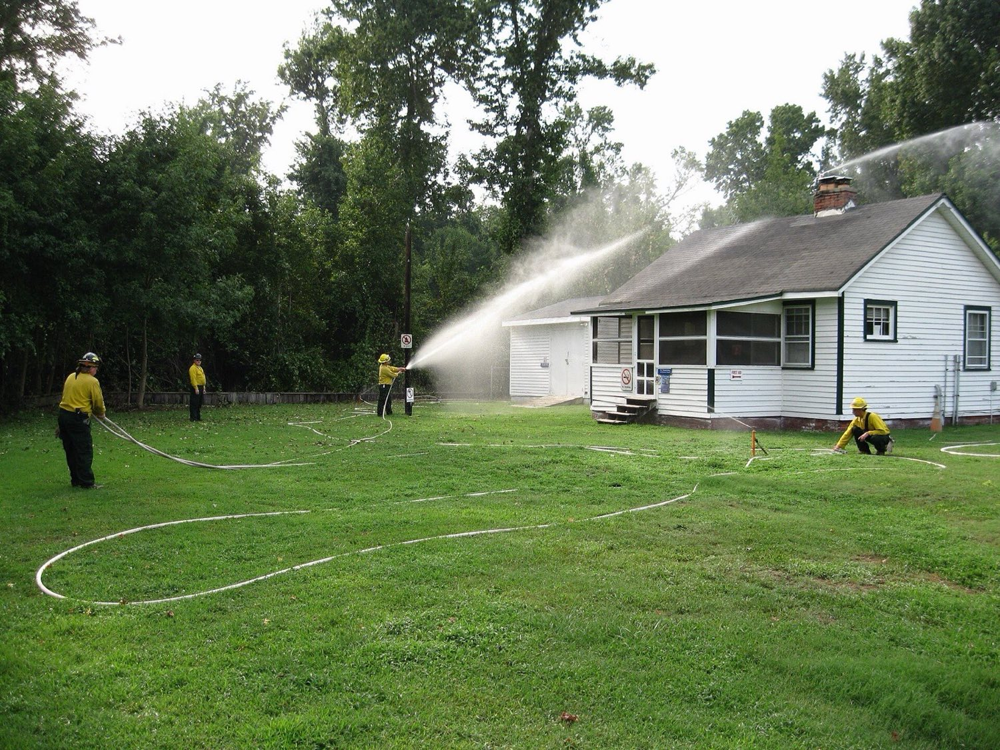
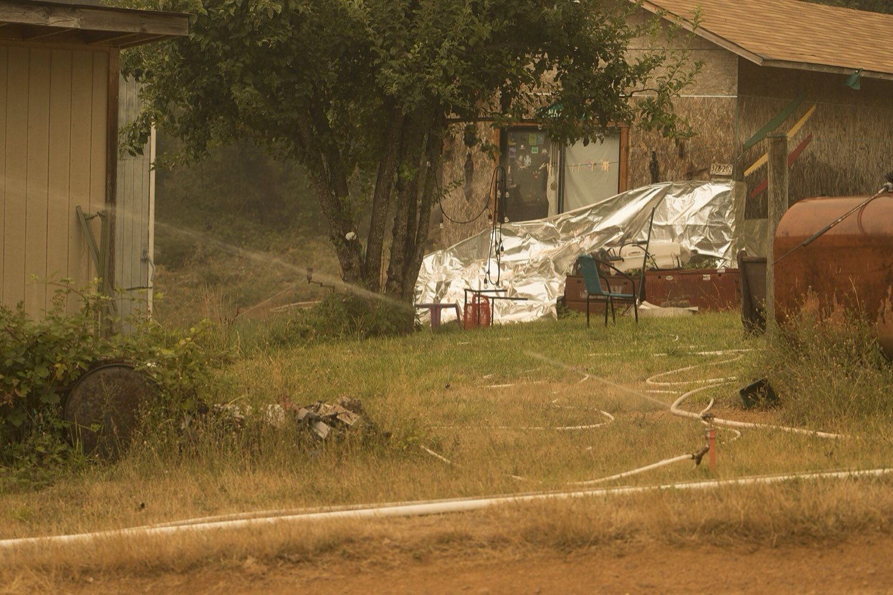
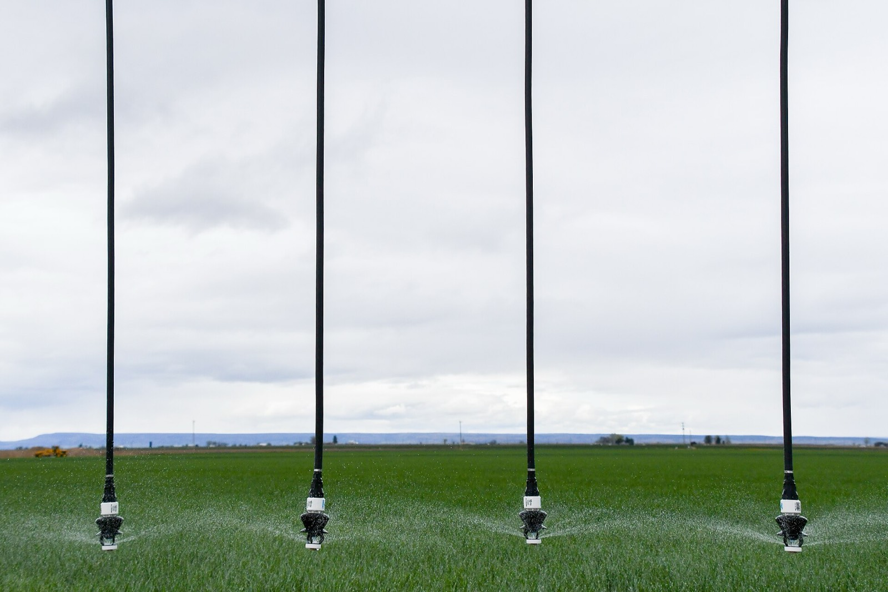

Μια αυτόματη γραμμή άμυνας, 30 έως 100 μέτρα πιο έξω: μια συνεχής υγρή ζώνη που σχηματίζεται μόνη της τη στιγμή που πλησιάζει ένα μέτωπο φωτιάς — με δικό της νερό, δικό της ηλιακό ρεύμα, με μέσο χωρίς φθόριο, και χωρίς να βρίσκεται κανείς επιτόπου.
Η μελέτη είναι έτοιμη. Τα κόστη είναι υπολογισμένα. Αυτό που ψάχνουμε είναι τον συνεργάτη που θα κατασκευάσει την πρώτη.
Κάθε προϊόν πυροπροστασίας από δασικές πυρκαγιές στην αγορά απαντά σε αυτά τα δύο ερωτήματα — και σχεδόν όλα απαντούν με τον ίδιο τρόπο: στο σπίτι, και αφού η φωτιά είναι ήδη εκεί. Αν τοποθετήσουμε τον κλάδο πάνω σε αυτούς τους δύο άξονες, εμφανίζεται ένα κενό τετράγωνο.
| Πότε δρα | Ποιος | Ο περιορισμός του |
|---|---|---|
| Μήνες πριν | Matrix Wildfire · θεσμοθετημένες αντιπυρικές ζώνες | Η επεξεργασία αποδομείται, και την ίδια τη στιγμή δεν γίνεται τίποτα |
| Λεπτά πριν | Frontline · waveGUARD · συστήματα ανά κατοικία | Μόνο η επιφάνεια του σπιτιού — τότε η φωτιά είναι ήδη στο οικόπεδο |
| Εκ των υστέρων | Team Wildfire · ομάδες επέμβασης ασφαλιστικών · εναέρια μέσα | Κάποιος πρέπει να φτάσει, με ανθρώπους και μηχανήματα, τη χειρότερη δυνατή στιγμή |
| Εκείνη τη στιγμή | Η Γραμμή Ανάσχεσης | Αυτό σήμερα δεν το καλύπτει κανείς |
Δεν εφεύραμε εμείς αυτή την ιδέα, και το λέμε πρώτοι. Στην Ισπανία, η Medi XXI κατασκευάζει από το 2006 περιμετρικές άμυνες με κανόνια γύρω από οικιστικά συγκροτήματα και κατέχει χορηγημένο δίπλωμα ευρεσιτεχνίας. Στη Γαλλία, η STME FIRE τρέχει ερευνητικό πρόγραμμα ακριβώς πάνω σε αυτό. Στην Πορτογαλία, πανεπιστημιακοί ερευνητές περιέβαλαν ένα χωριό με δώδεκα στήλες καταιονισμού το 2020. Στις ΗΠΑ, δύο χρηματοδοτούμενες εταιρείες κατασκευάζουν φράγματα σε βιομηχανική κλίμακα.
Αυτό που δεν κάνει κανείς είναι ακριβώς το κομμάτι που σχεδιάσαμε εμείς: μια γραμμή ανάσχεσης αρκετά μικρή, αρκετά φθηνή και αρκετά αυτόματη ώστε να την αγοράσει ένα σπίτι ή ένας δρόμος — μια συνεχής ζώνη από μικρούς εκτοξευτήρες αντί για λίγα μεγάλα κανόνια, με διπλή ενεργοποίηση, ενεργειακά αυτόνομη, και με μέσο που ήδη σήμερα πληροί την ευρωπαϊκή απαγόρευση των φθοριούχων αφρών από το 2030.
Ένας ορειχάλκινος εκτοξευτήρας κρούσης με ακτίνα 15 m κάθε 20 m, ώστε οι κύκλοι να επικαλύπτονται και να σχηματίζουν αδιάσπαστη υγρή ζώνη 22 m. Με ακτίνα 10 m η ζώνη θα είχε κενά — και η φωτιά περνά από τα κενά.
Μια δορυφορική ειδοποίηση πυρκαγιάς οπλίζει τη γραμμή περίπου στα 10 km. Ένας τοπικός ανιχνευτής φλόγας UV/IR την ενεργοποιεί περίπου στα 300 m. Γρήγορα και με ακρίβεια μαζί, χωρίς να χρειάζεται επιλογή.
Δική της δεξαμενή, δική της αντλία, φωτοβολταϊκά με μπαταρία και ηλεκτροπαραγωγό ζεύγος με αυτόματη εκκίνηση. Τουλάχιστον τέσσερις ώρες λειτουργίας. Η πίεση του δικτύου ύδρευσης και το ρεύμα είναι τα πρώτα που παίρνει μια δασική πυρκαγιά.
Αφρός κατηγορίας Α με μετρημένο φθόριο κάτω από 1 mg/kg, πιστοποίηση GreenScreen Silver, και ήδη στον κατάλογο εγκεκριμένων προϊόντων της Δασικής Υπηρεσίας των ΗΠΑ. Πληροί από σήμερα την απαγόρευση PFAS της ΕΕ που έρχεται το 2030.
Οι ανιχνευτές φλόγας λένε από ποιο τόξο έρχεται το μέτωπο, οπότε ξεκινά μόνο αυτός ο τομέας, συν δύο ιστοί περιθώριο. Το νερό κρατά δύο με τρεις φορές περισσότερο.
Ώρα εκκίνησης, πίεση, κατανάλωση νερού, θερμοκρασία, άνεμος, χρόνος λειτουργίας. Ο ασφαλιστής τιμολογεί ό,τι μπορεί να μοντελοποιήσει — γι' αυτό η γραμμή παράγει την απόδειξη από την πρώτη μέρα.
Η γραμμή στέκεται στεγνή. Ένας εβδομαδιαίος αυτοέλεγχος κινεί τις βαλβίδες, τα φωτοβολταϊκά κρατούν τη μπαταρία γεμάτη, η δεξαμενή μένει γεμάτη. Τίποτα δεν δουλεύει στο κενό — και το ίδιο δίκτυο σωλήνων μπορεί να ποτίζει.
Η δορυφορική ειδοποίηση πυρκαγιάς ξυπνά το σύστημα. Η αντλία θέτει το δίκτυο υπό πίεση, οι τομείς αναφέρουν έτοιμοι, και ο ιδιοκτήτης λαμβάνει ειδοποίηση — όπου κι αν βρίσκεται.
Οι ηλιακοί κόμβοι ανίχνευσης φλόγας UV/IR κατά μήκος της γραμμής δείχνουν όχι μόνο ότι έρχεται μέτωπο, αλλά και από ποιο τόξο.
Ξεκινά μόνο ο απειλούμενος τομέας, συν δύο ιστοί περιθώριο. Οι επικαλυπτόμενοι εκτοξευτήρες χτίζουν συνεχή ζώνη 22 m· ο αφρός δοσομετρείται στο 0,1–1 %. Με δυνατό άνεμο ο ελεγκτής περνά σε χονδρότερο σταγονίδιο, ώστε να παρασύρεται λιγότερο.
Τουλάχιστον τέσσερις ώρες από τη δική της δεξαμενή. Ο ενεργός τομέας ακολουθεί το μέτωπο καθώς περνά, και η ζώνη συνεχίζει να ψύχει το έδαφος αφού φύγει η φλόγα — αυτό ακριβώς σταματά την αναζωπύρωση.
Αναφορά συμβάντος: ώρα εκκίνησης, χρόνος λειτουργίας, πιέσεις, νερό και μέσο που καταναλώθηκαν, θερμοκρασία και άνεμος. Αυτός είναι ο φάκελος που μπορεί να μοντελοποιήσει μια ασφαλιστική — και ο λόγος που η απόδειξη υπάρχει ήδη από την πρώτη φωτιά.
| Πάνω από το έδαφος | Κάτω από το έδαφος | Το μηχανοστάσιο |
|---|---|---|
| Γαλβανισμένος χαλύβδινος ιστός 3–5 m σε πέδιλο σκυροδέματος Ορειχάλκινος εκτοξευτήρας κρούσης, ακτίνα 15 m, 25–30 l/min στα ~4 bar Ηλιακοί κόμβοι ανίχνευσης φλόγας UV/IR Εσωτερικός δακτύλιος: καταιονητήρες στέγης και γείσου — η στρώση των καύτρων |
Κεντρικός αγωγός HDPE, θαμμένος στα 0,45–0,5 m Μεταλλικός σωλήνας όπου βγαίνει στην επιφάνεια Βάνες απομόνωσης ανά τόξο Κανάλι συλλογής που επιστρέφει στη δεξαμενή το νερό που δεν εξατμίστηκε |
Δεξαμενή, διαστασιολογημένη στον τύπο βλάστησης Ηλεκτρική αντλία και εφεδρεία πετρελαίου με αυτόματη εκκίνηση Φωτοβολταϊκά, μπαταρία LiFePO4 σε πυράντοχο ερμάριο Δοσομετρητής αφρού 0,1–1 % και δεξαμενή συμπυκνώματος Ελεγκτής: 4G, δέκτης δορυφορικών ειδοποιήσεων, αισθητήρες καιρού και στάθμης |
Τυποποιημένοι πυροσβεστικοί σύνδεσμοι στη δεξαμενή, ώστε να μπορεί να αντλήσει ένα πυροσβεστικό όχημα — ο οικοδομικός κανονισμός της Βαλένθια το απαιτεί ρητά, και είναι ο γρηγορότερος τρόπος να γίνει η τοπική πυροσβεστική σύμμαχος αντί για εμπόδιο.
| Ανά ιστό, ανά συμβάν πυρκαγιάς | Ανά κατοικία, πλήρης δακτύλιος | Κοινοτική γραμμή, 1 km |
|---|---|---|
| ~2,9 m³ νερό 11–19 l συμπυκνώματος ~0,9 kWh 440–600 m² προστατευμένα |
31.000–82.000 € χορτολίβαδο (13 ιστοί) 37.000–98.000 € θαμνώδης (19 ιστοί) 62.000–163.000 € δάσος (44 ιστοί) 7.700 / 15.200 / 25.200 m² προστατευμένα |
121.000–251.000 $ = 1.500–7.400 € ανά κατοικία Η εκδοχή που μπορεί πραγματικά να πληρώσει ένας δρόμος |
Τα μεγέθη προέρχονται από το δικό μας υδραυλικό, ενεργειακό και κοστολογικό μοντέλο, σε ευρωπαϊκά επίπεδα τιμών. Αποστάσεις: 30 m σε χορτολίβαδο, 50 m σε θαμνώδη βλάστηση, διπλή σειρά στα 50 + 70 m σε δάσος· περίπου τα διπλά σε πλαγιά που ανεβαίνει η φωτιά.
Και τι δεν είναι. Έως και το 90 % των σπιτιών που χάνονται σε δασική πυρκαγιά ανάβουν από καύτρες που μεταφέρει ο άνεμος, όχι από το μέτωπο της φλόγας — και οι καύτρες πετούν πάνω από οποιαδήποτε ζώνη. Η γραμμή σταματά το μέτωπο και αφαιρεί την ακτινοβολούμενη θερμότητα· οι αντι-καύτρικοι αεραγωγοί, τα πλέγματα και μια βρεγμένη στέγη κάνουν τα υπόλοιπα. Παρέχουμε και τα δύο, και ποτέ δεν θα ισχυριστούμε ότι το ένα αντικαθιστά το άλλο.
Αυτές δεν είναι δικές μας εγκαταστάσεις. Είναι επίσημες εικόνες του τι κάνουν οι πυροσβεστικές υπηρεσίες όταν πλησιάζει μέτωπο: ξετυλίγουν μάνικες, κρεμούν εκτοξευτήρες, κατεβάζουν φορητές δεξαμενές και μένουν εκεί. Δουλεύει — και θέλει ανθρώπους, τη χειρότερη δυνατή στιγμή, στα τελευταία εκατό μέτρα. Αυτό ακριβώς το κομμάτι αυτοματοποιούμε και το πάμε στα 30–100 m.



Καμία από αυτές τις φωτογραφίες δεν είναι δική μας. Δεν έχουμε καμία εγκατεστημένη αναφορά, και καμία εικόνα σε αυτή τη σελίδα δεν δείχνει δική μας δουλειά. Τις χρησιμοποιούμε επειδή δείχνουν την ίδια φυσική — και το ίδιο όριο. Η πηγή και η άδεια της καθεμιάς τυπώνονται από κάτω.
Μπορούμε να το σχεδιάσουμε, να το διαστασιολογήσουμε, να γράψουμε το λογισμικό ελέγχου του και να διευθύνουμε την κατασκευή του. Αυτό που δεν μπορούμε είναι να χρηματοδοτήσουμε την πρώτη εγκατάσταση. Αυτή είναι όλη η πρόταση, ειπωμένη χωρίς περιστροφές.
Εγκαταστάτες πυροπροστασίας και αρδευτικών · κατασκευαστές που ψάχνουν εφαρμογή · οργανισμούς κοινής ωφέλειας και σιδηροδρόμους · δήμους και πυροσβεστικές υπηρεσίες · ασφαλιστικές και MGA που ήδη πληρώνουν για πρόληψη · ξενοδοχειακά συγκροτήματα, κτήματα και βιομηχανικές εγκαταστάσεις σε περιοχές υψηλού κινδύνου.
Μια γραμμή επίδειξης 100–200 μέτρων, με όργανα, βιντεοσκοπημένη, μετρημένη. Έχουμε ήδη υποψήφιο χώρο: την περίμετρο μιας βιομηχανικής μονάδας περίπου πέντε με έξι εκταρίων στο Βιετνάμ — δικό μας έδαφος, δικό μας συνεργείο, δικές μας προμήθειες. Είναι η φθηνότερη αξιόπιστη απόδειξη που υπάρχει, και αυτό είναι που μετατρέπει ένα σχέδιο σε τεκμήριο.
Και η ειλικρινής λίστα με όσα δεν έχουμε. Καμία εγκατεστημένη αναφορά. Καμία υπογεγραμμένη μελέτη πυροπροστασίας. Καμία άδεια σε καμία δικαιοδοσία. Αυτό που έχουμε είναι μια ιδέα υπολογισμένη μέχρι το επίπεδο κόστους, την εικόνα των ανταγωνιστών και της νομοθεσίας γραπτώς, το λογισμικό που την κάνει γραμμή άμυνας και όχι ποτιστικό, και έναν διευθυντή έργου που έχει ήδη παραδώσει. Προτιμούμε να ανοίξουμε με αυτή τη λίστα παρά να τη βρουν εκ των υστέρων.
Οικονομολόγος στην εκπαίδευσή του, έχει φέρει έργα από την πρώτη συνάντηση έως την παράδοση. Είναι γενικός διευθυντής (Tổng giám đốc) μονάδας πτηνοτροφίας για εξαγωγές στην επαρχία Thanh Hóa του Βιετνάμ — χτισμένης με ουγγρική τεχνολογία και ουγγρικά κεφάλαια σε περίπου πέντε με έξι εκτάρια, και εγκαινιασμένης στις 24 Οκτωβρίου 2019 παρουσία των υπουργών Γεωργίας Ουγγαρίας και Βιετνάμ και του Ούγγρου πρέσβη. Δεκαετίες διεθνούς διαχείρισης έργων ανάμεσα σε δύο χώρες και δύο γλώσσες, και επί πολλά χρόνια τακτικός διερμηνέας για αποστολές υψηλού επιπέδου και των δύο κυβερνήσεων, μεταξύ αυτών της αντιπροσωπείας της Εθνοσυνέλευσης του Βιετνάμ στην Ουγγαρία το 2022.
Δεν είναι μηχανικός και δεν παρουσιάζεται ως τέτοιος. Αυτό που φέρνει είναι εκείνο που λείπει συχνότερα σε ένα εργοτάξιο: να ξεκινήσει πραγματικά το έργο, να τραβούν όλοι προς την ίδια κατεύθυνση, να κρατήσουν τα χρήματα και το χρονοδιάγραμμα, και να υπάρχει κάποιος που λογοδοτεί για την παράδοση.
Μηχανικός λογισμικού και συστημάτων: η ανίχνευση, η λογική ενεργοποίησης, ο έλεγχος κατά τομέα, η τηλεμετρία και το αρχείο συμβάντων — και η εφαρμογή στην οποία ένας ιδιοκτήτης που απομακρύνεται βλέπει ότι η γραμμή ζει. Παλιότερα εκπαιδευτής πτήσεων, από εκεί έρχεται η συνήθεια να σχεδιάζει για τη στιγμή που κάτι χαλάει και όχι για τη στιγμή που όλα δουλεύουν.
Σε αυτό το σύστημα το λογισμικό δεν είναι εξάρτημα. Η διαφορά ανάμεσα σε έναν εκτοξευτήρα και σε μια γραμμή άμυνας είναι ακριβώς αυτό που κρίνει πότε ξεκινά, πόσο νερό ξοδεύει και τι μπορεί να αποδείξει μετά.
Αν κατασκευάζετε πυροπροστασία, αρδευτικά ή υποδομές, και έχετε μια περίμετρο που πρέπει να υπερασπιστείτε — αυτή ακριβώς είναι η συζήτηση που ψάχνουμε. Απαντάμε στα αγγλικά, τα ουγγρικά και τα βιετναμικά.
Η πλήρης μελέτη σκοπιμότητας, το μοντέλο κόστους και η ανάλυση ανταγωνισμού διατίθενται κατόπιν αιτήματος, στα ουγγρικά ή στα αγγλικά.